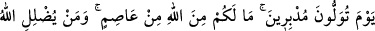

32. «Ey kavmim! Gerçekten sizin için o bağrışıp çağrışma gününden,
korkuyorum.”
“Ey kavmim! Gerçekten sizin için o bağrışıp çağrışma gününden, korkuyorum.”
O günden korkuyorum, çünkü o gün, (inkârda) ısrar edenler ve işkence edenler için
büyük azap söz konusudur. Veya çağrışma gününün azabından korkuyorum.
“
/çağrışma günü”nden maksad, kıyamet günüdür. Çünkü herkes yardım istemek
üzere birbirine bağıracaktır. Nitekim “Hiçbir şefaatçı yok mu ki bizlere şefaat etsin!”
(el-A’râf 7/53) sözleri de bu hengâmda söylenecektir. Fakat hiç kimse başkasının
feryâdına kulak asmayacaktır!
Yahut o gün: “Vah başımıza gelenler! Bizi kabirlerimizden kim diriltti böyle!?”
(Yâsîn 36/52); “Bu ne biçim kitapmış yahu, küçük-büyük ne yapmışsak yazmış?!”
(el-Kehf 18/49) vb. sözlerle veyl ve helâk eksenli bağırıp çağrışmalar olacağı için bu
güne “çağrışma günü” denmiştir.
Yahut da cennetlikler cehennemliklere sesleneceği için o güne “çağrışma günü”
denmiştir. Yâni “Cennetlikler, cehennemliklere: «Bizler rabbimizin vaadettiği
şeylerin: cennet ve ebedî istirahatgâhın hak ve gerçek olduğunu gördük, sizler de
Rabbinizin size vaadettiği şeyin; ateş azabının hak ve gerçek olduğunu gördünüz
mü?!» diye seslenecekler; onlar da «evet» diyeceklerdir” (el-A’râf 7/44)
“Cehennemlikler de cennetliklere «suyunuzdan veya Allah’ın size bahşettiği
rızıktan biraz da bize verin» diye sesleneceklerdir..” (el-A’râf 7/50)
Kâşifî der ki: Ölümden sonra şöyle seslenilir: Ey cennet ehli, ebediyet vardır, ölüm
yoktur. Ey cehennem ehli, ebediyet vardır, ölüm yoktur.
Veya o gün bir münâdî şöyle seslenir: Falan talihlidir, zira asla bedbaht olmaz. Falan
bedbaht oldu, zîrâ ebediyen tâlihli olmayacak.
33. “Arkanıza dönüp kaçacağınız günden. Sizi Allah’tan (O’nun azabından)
kurtaracak kimse yoktur. Allah kimi saptırırsa, artık onu doğru yola iletecek de
yoktur.»
Hesabınız görüldükten sonra “arkanıza dönüp kaçacağınız,” cehenneme doğru
götürüleceğiniz “gün”, bir önceki âyette bahsedilen “çağrışma günü”nün aynısıdır.
Yâni, hesap mahallinden dönüp kaçacağınız gün. O gün “sizi Allah’tan kurtaracak,”
O’nun azabından koruyup kollayacak “hiç kimse olmayacaktır. Allah kimi saptırırsa